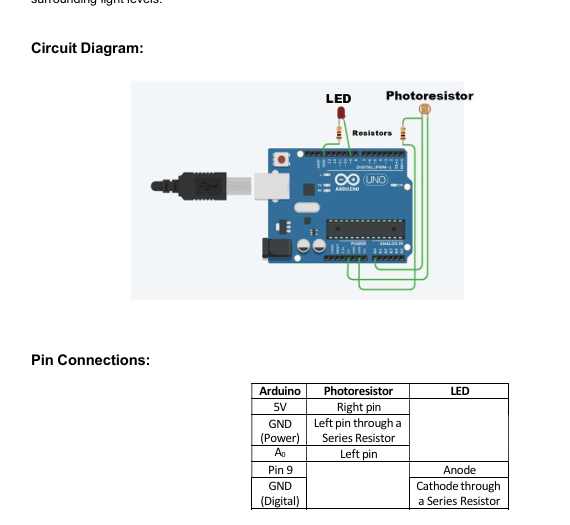

To study the working of Light Sensor using Arduino.
TinkerCAD (Free online simulator)
Arduino UNO
LED
Photodiode
Resistors
The goal of this practical is to create a system that can automatically control the brightness of an LED based on the light detected by a photodiode. This project uses the principles of light sensing and feedback control.
a) Photodiode: A light-sensitive semiconductor device that generates current or voltage proportional to the light intensity. It acts as the input sensor in this system.
b) LED: A Light Emitting Diode used as the output device. It emits light and its brightness can be controlled.
c) Arduino: The Arduino microcontroller reads data from the photodiode, processes it, and controls the LED's brightness accordingly.
a) Photodiode Operation:
The photodiode is connected to one of the Arduino's analog input pins. When exposed to light, it generates a voltage proportional to light intensity. Arduino reads this analog value.
b) Control Algorithm:
Arduino converts the analog reading into a control signal for the LED. More light results in higher LED brightness and less light reduces brightness.
c) Feedback Loop:
The system continuously monitors light intensity. Arduino processes the data and adjusts LED brightness in real-time based on the photodiode input.
The brightness of the LED was successfully controlled using a photodiode and Arduino based on light intensity.
int SensorValue = 0;
void setup() {
pinMode(A0, INPUT);
pinMode(9, OUTPUT);
Serial.begin(9600);
}
void loop() {
SensorValue = analogRead(A0);
Serial.println(SensorValue);
analogWrite(9, map(SensorValue, 0, 1023, 255, 0));
delay(100);
}
